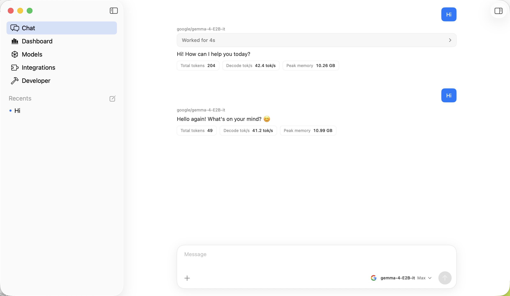
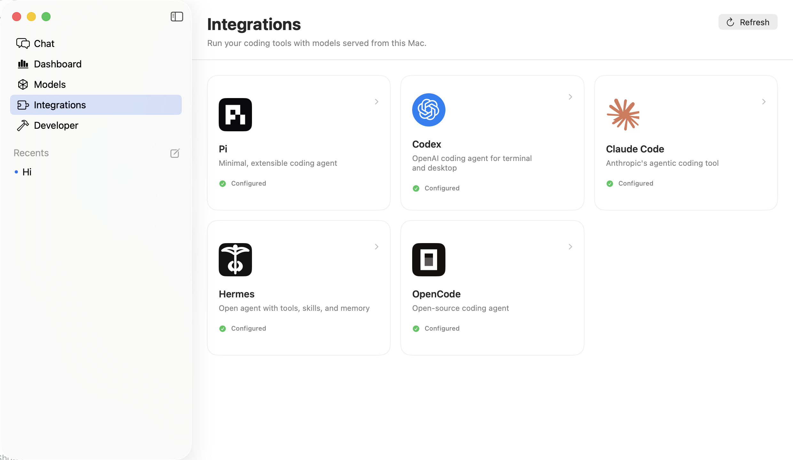

Pick the right model for your Mac
Run standout open models from Google, Cohere, and Liquid AI. Nativ recommends the right partner model for your hardware.
Nativ puts frontier intelligence on your desk. Download and run open models on Apple Silicon — no accounts, no subscriptions, no cloud.
Universal · Apple Silicon (M1+)

Talk to open models with streaming responses and per-message performance metrics.
CAPTURED LIVE ON THIS MAC · JUL 2026/ SIX REASONS TO GO LOCAL
Run standout open models from Google, Cohere, and Liquid AI. Nativ recommends the right partner model for your hardware.
A clean interface with streaming, markdown, code highlighting, and image input. Every response is generated locally.
Live tokens/sec, memory pressure, thermal state, and time-to-first-token. The details developers want.
Built on MLX-VLM and tuned for M-series unified memory and Metal — no wrappers, no translation layers.
Chat with an LLM, caption an image, summarize video, autocomplete code, or transcribe and generate speech.
No accounts to create, no credits to buy, no data to sell. You own it end-to-end.
MITLICENSED/ INTEGRATIONS
Connect the coding agents you already use to models running locally on your Mac. Nativ handles the endpoint; your workflow stays familiar.

MANIFESTO · REV 1.0
philosophy.txtUTF-8$ cat philosophy.txt
The other “local AI” apps you’ve heard of? They’re proprietary shells built on top of open-source engines they don’t own. They keep the UI closed, add a paywall, and hope you don’t look under the hood.
We built in the open. The desktop app is open too. Every line. Every model loader. Every telemetry chart. You can read it, fork it, or send a pull request tonight.
No VC roadmap. No enterprise tier. No dark pattern that turns your prompts into training data. Just software made by researchers and hackers, for researchers and hackers.
// Community owned. MIT licensed. Free forever.
/ PARTNER MODELS
YOUR MAC IS MORE CAPABLE THAN YOU THINK
Run it locally, in the open.